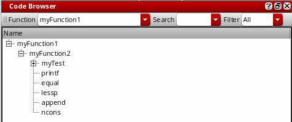
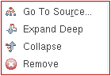

Using the Code Browser Assistant
Use the Code Browser assistant to browse the calling trees of user-defined functions. It helps you determine what child functions are called by the parent functions. You can expand the entire tree or one node at a time. You can also view the function definition for a user-defined function.
For a video demonstration on Code Browser assistant, see Browsing Your Code Using SKILL Code Browser on Cadence Online Support.
To view the function tree of a user-defined function:
-
Access the Code Browser assistant using one of the following options:
- Choose Window – Assistants – Code Browser.
- Right-click the function name in the source code pane and choose Go To Code Browser ( ) from the context-menu.
The Go To Code Browser ( ) context-menu item gets enabled for selection only after you load the open file. -
In the Function drop-down list, type the name of the function you want to display. The expanded function appears in the results pane.
You can use the Filter drop-down list to filter the results by User (functions that are neither binary nor write-protected), System (non-user binary SKILL functions), or All.
You can right-click a function name in the results pane and select one of the following options:

- Go To Source: To view the definition of the function in the source code pane.
- Expand Deep: To display all user-defined functions recursively until the entire calling tree is expanded.
- Collapse: To collapse the tree and remove all functions called by the selected function from the results pane.
- Remove: To remove the selected function from the results pane.
Related Topics
Using the Method Browser Assistant
Return to top